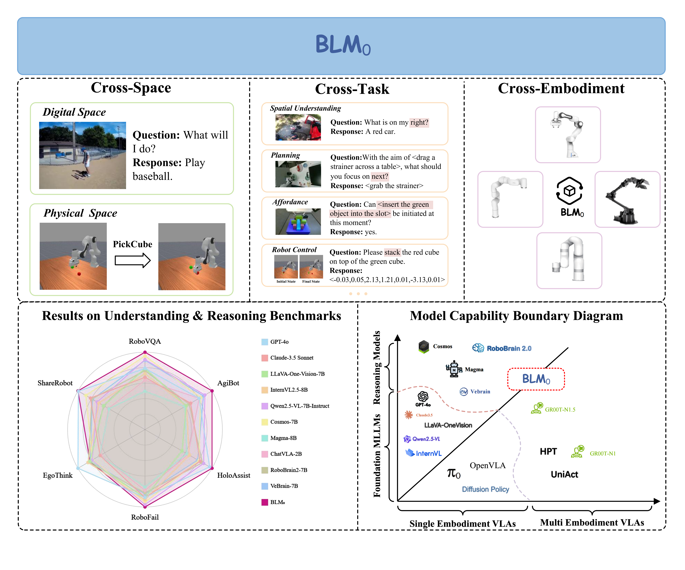
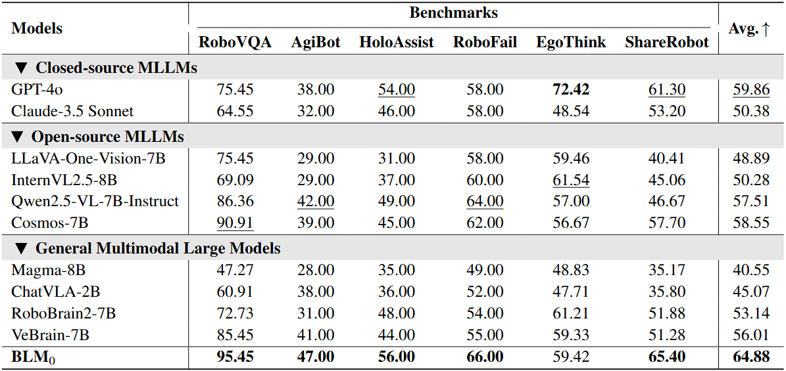
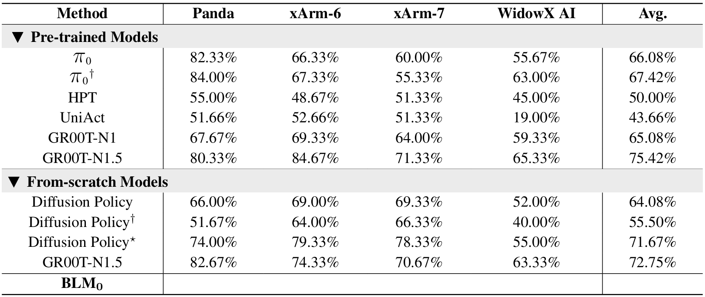

BLM0: A Boundless Model for Cross-Space, Cross-Task, and Cross-Embodiment Learning

Abstract
We present Boundless Large Model (BLM0), a multimodal spatial foundation model that preserves the native instruction-following and reasoning ability of MLLMs while acquiring effective robotic control. We formalize three requirements for generalist agents—cross-space transfer (digital→physical), cross-task learning, and cross-embodiment generalization—and instantiate them with a two-stage training pipeline. Stage I performs supervised fine-tuning on large-scale digital-space understanding and reasoning corpora to inject embodied perception and spatial knowledge without degrading the underlying language capabilities. Stage II freezes the MLLM backbone and trains a diffusion-based policy head on a self-collected cross-embodiment demonstration suite spanning Franka Emika Panda, xArm-6, xArm-7, and WidowX AI over six increasingly challenging tasks; demonstrations are generated in ManiSkill to ensure collision-free, time-parameterized trajectories. A simple intent-bridging interface exposes embodiment-agnostic high-level intents from the MLLM to the policy, decoupling reasoning from low-level control. On our benchmarks, the single set of BLM0 weights outperforms representative MLLMs, ELLMs, VLA models, and general multimodal large models, improving digital-space reasoning by ∼6% and physical control by ∼3% without model switching. To our knowledge, our evaluation suite is the first to fix task semantics while systematically varying embodiments to assess cross-embodiment generalization.
Performance
Digital-Space Benchmarks

Comparison with existing MLLMs and GMLMs on digital-space benchmarks.
Physical-Space Benchmarks

Comparison with existing VLAs on Physical-Space benchmarks. † denotes the training of independent models on four robots, with each model evaluated across six tasks. ⋆ denotes training independent models for each of the six tasks associated with four robots (24 models in total), with evaluation on the corresponding tasks for each robot.
Model Architecture
Backbone.
We use the open-source Qwen2.5-VL-7B-Instruct as the MLLM backbone for embodied question answering and reasoning.
Given a sequence of video frames and a text prompt, the model outputs response tokens and multimodal hidden states.
We take an intermediate representation from a chosen transformer block as the high-level intent for control.
Robot policy.
For continuous robotic control, we use a Diffusion Transformer (DiT) conditioned on that high-level intent.
The current proprioceptive state is encoded by a lightweight state encoder.
We predict a short-horizon chunk of actions; during training we add noise and embed the actions with a lightweight action encoder.
DiT denoises with interleaved self-attention over state and action embeddings, plus cross-attention to the intent.
A lightweight action decoder produces the final action chunk for execution.
To generalize across embodiments, DiT parameters are shared, while the state/action encoders and decoders remain embodiment-specific.
This is a Architecture. This is a Architecture. This is a Architecture. This is a Architecture.
This is a Architecture. This is a Architecture. This is a Architecture. This is a Architecture.
This is a Architecture.
Digital-Space Demos

Citation
If you find this project useful, please consider citing our paper.
@article{,
title={},
author={},
journal={},
year={2025}
}Acknowledgement
This website is adapted from Nerfies, licensed under a Creative Commons Attribution-ShareAlike 4.0 International License.